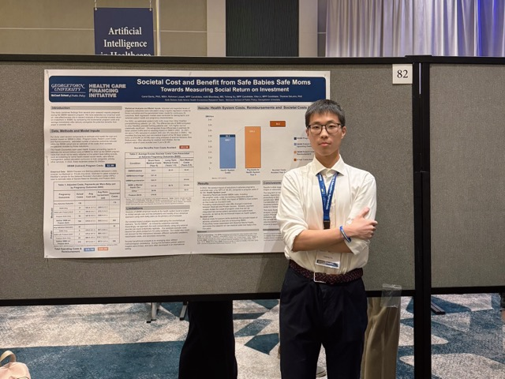

About You
About Me
Yetong Xu
Phone: (703) 517-0606
Email: yx322@georgetown.edu

Education
GEORGETOWN UNIVERSITY
Master of Science in Data Science for Public Policy
Sep 2022 - Jun 2024, Washington DC
GPA: 3.963/4.00
Scholarship: Office of the Dean Scholarship($15,000), McCourt Fund for Experiential Learning($6,000)
Relevant Courses: Accelerated Statistics for Public Policy, Geographic Data in Program R, Intermediate Microeconomics, Comparative Policy Process, Data Science: Advanced Modeling Techniques, Data Visualization, Time Series, Databases, Massive Data Fundamentals
Experience
Assess the impact of the International Rescue Committee’s Refugees in East Africa: Boosting Urban Innovations for Livelihoods Development (Re:Build) program
Research Assistant
Advisor: Andrew Zeitlin
GU Initiative on Innovation, Development and Evaluation
Apr 2023 - Present, Washington DC
- Collaborated with psychologists from Princeton University and members of the International Rescue Committee during a tenure in Nairobi, Kenya from July to September - Design survey instruments to measure study outcomes and code them in SurveyCTO
- Oversee field data collection, conducting ‘high frequency’ and other quality checks, and provided support in data cleaning and analysis.
- Contribute to research reports, policy briefs, and blog entries for reporting and dissemination
- Partner with the Senior Data and Research Manager and Principal Investigators to enhance research designs, sampling methodologies, data management procedures, and overall research protocols
The importance of Continuity between Prenatal Care and Labor&Delivery in Serving a High- Risk Urban Population
Research Assistant
Advisor: Thomas Deleire
Health Care Finance Initiative, Georgetown University
Oct 2022 - Present, Washington DC
- Acquired comprehensive datasets from Medstar Medical Center, encompassing patient demographics, encounter records, cost metrics, and outcomes
- Processed raw data to address missing and incorrect entries. Utilized Python to formulate structured datasets (including Person Level, Encounter Level, and Pregnancy Level) tailored for economic research
- Conducted statistical analyses using STATA and developed a comprehensive codebook to streamline our group’s analytical processes
- Showcased our research poster in the MedStar Health – Georgetown University Research & Education Symposium and the 2023 Academy Health Conference
- Conduct advanced cost-effectiveness analysis for the Safe Baby Safe Mom (SBSM) program in the DMV region
Machine Learning of elderly people’s willingness to delay retirement–Based on Charls and HRS
Georgetown University
Feb 2023 - May 2023, Washington DC
- Employed Python and Stata to assess the delayed retirement intentions among elderly populations in China and the US, focusing on parameters like gender, age, education, workplace nature, pension, and COVID-19 related factors, using Charls 2018 and HRS 2020 datasets
- Applied advanced analytical techniques, leveraging three non-parametric models: Random Forest, Neural Networks, and XG-Boost, complemented by a parametric approach via Logistic Regression
- Synthesized findings to propose and implement a progressive and adaptable delayed retirement strategy
The world’s first database of development finance institutions
Research Assistant
The Institute of New Structural Economics at Peking University
Apr 2022 - Jul 2022, Beijing
- Spearheaded data collection efforts in the public policy realm, focusing on development finance institutions, and performed comprehensive analyses of their annual and financial reports
- Played a pivotal role in enhancing natural language processing methodologies for streamlined financial data extraction
- Contributed significantly to the creation and launch of the world’s premier database on development finance institutions, showcased through a visual data platform: click here
Research on the rehabilitation of stroke patients in China
Research Assistant
PKU Institute for Global Health and Development
Mar 2022 - Sep 2022, Beijing
- Delved deeply into the repercussions of rehabilitation healthcare policies, particularly analyzing their effects on service provider selection criteria and discerning key determinants influencing stroke patients’ decisions when choosing a rehabilitation service
- Conducted a thorough analysis of the supply-demand dynamics of rehabilitation treatments, coupled with a health economics evaluation of rehabilitation service provisions for stroke patients
Data analysis of Tmall Taobao beauty care plate
Team Leader
Peking University National School of Development
Mar 2021 - Jun 2021, Beijing
- Led an analysis on an expansive dataset of over 270,000 entries from the beauty care sector on Taobao and Tmall, focusing on lipstick economy trends during the epidemic
- Employed a multitude of analytical techniques including word frequency statistics, word cloud visualizations, SPSS regression analysis, origin analysis, and keyword analytics
- Determined that the majority of beauty care products in the world originate from China, predominantly within its eastern coastal regions. Synthesized these findings into a comprehensive report, complemented by effective data visualizations
Research on Resource Scheduling Strategy for Energy Consumption Optimization of Big Data
Undergraduate Thesis
Dec 2020 - Jun 2021, Beijing
- Selected “Energy consumption optimization strategy of big data systems” as the focal research area, in line with the growing trends in big data and green computing
- Utilized the MapReduce parallel computing model for experimental validation, demonstrating that the ODTC enhances task execution efficiency and reduces energy consumption by approximately 15% when compared to FIFO and other prevalent algorithms - Actively participated in drafting and finalizing a manuscript prepared for submission
China Central Television(CCTV)Economic life survey
Research Assistant
Peking University National School of Development
Jul 2019 - Apr 2020, Beijing
- Performed statistical analysis on data collected from the 2019-2020 CCTV Economic Life survey
- Oversaw the “real estate market” segment and authored specialized reports for CCTV
Research on Chinese Enterprise Innovation and Entrepreneurship
Research Assistant
Peking University Enterprise Big Data Research Center
Jul 2019 - Apr 2020, Beijing
- Conducted on-site visits to nearly 70 private enterprises in Beijing in 2019, interviewing business leaders to gain insights into the domestic entrepreneurial journey and current management practices
- Followed up with the enterprises in early 2020 to gather information on their investment, financing, and operational statuses amid the pandemic
- Contributed to research publications, offering solutions for medium and micro enterprises at risk of closure due to the COVID-19 pandemic
2019 American College Student Mathematics Modeling Competition
Team Leader
Jan 2019 - May 2019, Beijing
- Developed a disaster relief response system leveraging rotor-wing drones in the aftermath of the devastating hurricane that impacted Puerto Rico, resulting in significant infrastructure damage and approximately 2,900 fatalities
- Optimized space utilization across five local hospitals, considering factors such as the type and volume of medical packages, drone capabilities, and hospital locations
- Employed MATLAB and the Gravity Center Model (GCM) to pinpoint the optimal container placement locations
- Won Meritorious Award (top 5% among global competitors)
Professional Experience
Haitong Securities
Asset Management Department, Intern
Jul 2021 - Sep 2021, Shanghai
- Did Research on the weekly data in the articles “Crude oil Imports” and “US Crude oil Production” from the official website of EIA
- Obtained the data on crude oil, fuel oil, power futures and spot prices, gasoline inventory, and commercial crude oil inventory from Wind
- Undertook extensive data collection, and executed both single-factor and multi-factor strategy analyses of crude oil price timing by combining methods in the research of “Whether short-term supply and demand Data can be used for crude oil timing” Ministry of Education of the People’s Republic of China
National Study Fund Management Committee, System Administrator
Jul 2019 - Sep 2019, Beijing
- Managed daily system updates and handled database queries for the CSC using SQL
- Guaranteed the seamless operation of China’s online scholarship application system for college students by identifying and resolving system bugs and user requirements
Extracurricular Activities
Beijing EV Youth Charity Organization
Mar 2018 - Sep 2018, Beijing
- Engaged in volunteer teaching in mountainous regions for six months, covering subjects such as moral education, sports, arts, handicrafts, and English
- Spearheaded group discussions and crafted bespoke courses and educational materials tailored for the children
Skills & Languages
Skills: Microsoft Office (Excel/PowerPoint/Words), Python, R, GIS, iMovie, Event Planning, Public Speaking, Wind Database, C, C ++, Java, C #, SQL Database, Adobe Series Software, HTML / CSS, Visio, Stata, SPSS, Axure, XMind, Eclipse, Eview
Languages: English(Fluent); Mandarin Chinese(Native)